Change of Coordinates
We employ changes of coordinates in our polynomial rings, and emphasize that such are reversible changes of variables. They may therefore be denoted by an invertible matrix. The change of coordinates
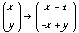
can be written as the equation
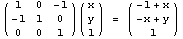.
Because
det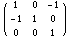 = 1
the inverse change of variables is encoded by
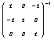= 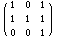.
Elementary Matrices
An elementary matrix over a ring with 1 is a matrix with 1s on the diagonal and zeros at all but one other position, which contains some element of the ring. An example elementary matrix is
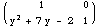
while
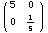 and 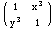
are not elementary matrices.
Monomial and Term Orders on Polynomial Rings
Given a polynomial ring in a set of ordered variables, monomials can be represented by integer vectors whose entries are the powers of corresponding variables in the known order. Such vectors can be fed to a function which returns integer vectors, which may compared lexicographically. Thus, monomials may be ordered. A term may be represented as a pair of coefficient and monomial, and various orders on terms may be defined as functions of monomial orders and coefficient orders (e.g., absolute value). The popular literature often doesn't use coefficients in defining term orders, so that in these cases term orders are monomial orders. Using term orders, the polynomials of a ring may be ordered by lexicographic comparison of the terms of a polynomial, listed in term order in avector.
Two common functions applied
to vectors of integers representing encoding variable exponents from monomials
are lexicographic order, which just returns the exponent vector itself,
and degreelexicographic
order, which prepends the sum of the elements of an exponent vector to
the vector itself, the idea being that the total degree of monomials should
be compared
lexicographically before
the powers of the monomials' variables.
Syzygy Polynomials
The syzy gy polynomial of a pair of polynomials f and g with leading terms ltf and ltg, respectively, is the linear combination
spoly(f,g) = 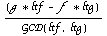 = ( 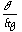 - 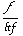) * LCM( ltf , ltg )
in which the multiples of the leading terms of f and of g cancel.
Reduction of Vectors and Matrices
For vectors or matrices A and B of equal shape with elements from a ring, we define reduction of A to B to mean the identification of suitable elementary matrices 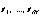 so that
B = 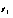··· 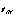· A.
Invertible Matrix Factorization over Polynomial Rings
Laplace's expansion of the determinant demonstrates that each column and each row of an invertible square matrix generates an ideal containing 1; that is, each column and each row of an invertible matrix is unimodular. The ability to make 1s appear in unimodular vectors can therefore be useful in making 1s appear in invertible matrices, and, as in Gauss-Jordan elimination, presence of 1s facilitates factorization.
We say that a vector of polynomials is intrareduced with respect to a term order if each element of the vector is invariant modulo the ideal generated by its peers, that is, the elements of the vector other than itself. For this notion to be defined, a term order must be in mind. We define intrareduction to be the reduction of a given vector into an intrareduced form, and remark that the necessary elementary matrices may be 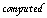 using Groebner Bases.
For examples, the vectors
(1) and (0,1,0) and ( 1 - x y,  ,0)
are intrareduced and the vector (0,2,1) is not since both reduce to (0,0,1).
,0)
are intrareduced and the vector (0,2,1) is not since both reduce to (0,0,1).
An important property of intrareduced vectors is that their number of unique leading monomials (and thus leading terms) equals the vector's length.
Catalyzing Vector Intrareduction Using Changes of Coordinates
The coordinate change {x -> x - 1 } applied to the intrareduced and unimodular vector
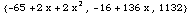
yields
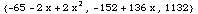
which intrareduces to (0,1,0) and hence reduces to (0,0,1). Contrast this with the change of coordinates {x -> x + 1 }, under which the vector 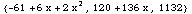 arises, which itself intrareduces to 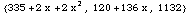.
Applying the change of coordinates { x -> x - 1, y -> y - 1 } to the intrareduced and unimodular vector
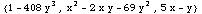
and subsequently intrareducing yields
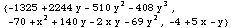.
Applying the change of coordinates { x -> x - 1 , y -> -x + y } to
and subsequently intrareducing yields
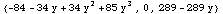
= {  , 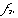
, 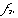 }
.
}
.
Intrareduction of { 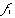, 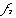
+ spoly(  , 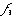
) ,
, 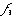
) ,  }
yields (1,0,0) which reduces by permutation to (0,0,1).
}
yields (1,0,0) which reduces by permutation to (0,0,1).
It is conjectured that a change of coordinates exists for every intrareduced vector which lacks a 1 after which intrareduction is progressive lexicographically.
Catalyzing Vector Intrareduction Using Syzygy Polynomials
Cohn proved in a classic
paper that no product of elementary matrices exists over any polynomial
ring which can reduce ( 1 - x y ,  ) to (0,1). Consequently, the intrareduced vector ( 1 - x y, 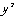,0)
does not intrareduce to (0,0,1) under any change of coordinates.
Using two elementary matrices (1 - x y ,
) to (0,1). Consequently, the intrareduced vector ( 1 - x y, 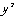,0)
does not intrareduce to (0,0,1) under any change of coordinates.
Using two elementary matrices (1 - x y ,  ,0)
reduces to
,0)
reduces to
(1 - x y ,  ,
(y)(1 - x y) + (x)(
,
(y)(1 - x y) + (x)( )) = (1 - x y , ,y)
= ( 1 - x y ,
)) = (1 - x y , ,y)
= ( 1 - x y ,  ,
spoly( 1 - x y ,
,
spoly( 1 - x y ,  ) )
) )
which itself intrareduces to (0,0,1).
It is conjectured that every intrareduced vector becomes non-intrareduced upon addition of a syzygy polynomial to the lowest term-ordering entry, and subsequently intrareduces with net lexicographic progress with respect to term order.
It is conjectured that every intrareduced vector becomes non-intrareduced and subject to term-order-progressive intrareduction upon addition of an appropriate multiple of some element of the Groebner Basis generated by the higher term-ordering elements of the vector to a lower term-ordering entry. No counterexample is known after millions of experiments in summer 1999. Notice that this is the generalization of the idea of the paragraph above.
Conjecture Proof Ideas
Let (  ,
... , 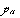)
be a list of polynomials in ZZ[ 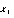,
... , 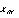]
with gb{ 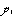,
... ,
,
... , 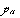)
be a list of polynomials in ZZ[ 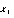,
... , 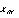]
with gb{ 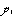,
... ,  } = {1}. We intend to prove that intrareduction together with coordinate
changes and syzygy polynomial deposition provide a simple algorithm for
reduction of unimodular vectors to (0,...,0,1) for all n>2
and, obviously, n=1.
} = {1}. We intend to prove that intrareduction together with coordinate
changes and syzygy polynomial deposition provide a simple algorithm for
reduction of unimodular vectors to (0,...,0,1) for all n>2
and, obviously, n=1.
Letting "<" denote a chosen term order with no infinite descending chains, we WILL show that every intrareduced vector v not of length 2 permits a change of coordinates C, such that both
C(v) is NOT intrareduced
and
intrareduce(C(v)) < v.
Iteration of intrareduction
therefore produces a vector with at most 2 nonzero entries, and, as in
the example (1-x y,  ,0),
deposition of the syzygy polynomial of the nonzero entries in such a case
onto the present 0 catalyzes further intrareduction.
Because our term order has no infinite descending chains, this process
terminates, and because of unimodularity, with a permutation of (0,...,0,1).
,0),
deposition of the syzygy polynomial of the nonzero entries in such a case
onto the present 0 catalyzes further intrareduction.
Because our term order has no infinite descending chains, this process
terminates, and because of unimodularity, with a permutation of (0,...,0,1).
We need to show, however, that for each intrareduced vector, lacking a 1 entry, there always exists a change of coordinates which produces a vector not violating term order and whose intrareduction improves term order. We aim to do this by showing that there are an infinite number of changes of coordinates respecting leading term order while the number of intrareduced vectors with the same leading terms is finite.
Change coordinates and reattempt intrareduction, reattempting for all linear changes of coordinates until one works.
Idea 2
Prove that gb{vn,...,v2} doesn't contain all of {vn,...,v2}, which implies that the missing element vj is missing because another element p is present with LT(p) | LT(vj). add p to v1, which is a minor lexicographic step backwards with subsequent step more lexicographically significant forwards.
Idea 3
Define the covector of a unimodular vector U to be the vector V such that U 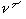= 1. If U is intrareduced then is V provably NOT intrareduced? Is reduction progress with V convertible to reduction progress with U ?
Idea 4
Is there a VS-Lemma-10.5-esque reason that the big-ass GB must contain a unitary polynomial of degree smaller than the leading degree in an intrareduced vector?
Idea 5
Is there a lemma about a proper ideal comaximal with a principal ideal necessarily containing a unitary polynomial of degree less than the leading generator's degree?
Idea 6
Is there an argument about the existence of a linear change of coordinates that will break the quality of being intrareduced?
Idea 7
Let p,q be coefficients of terms of polynomials P,Q in ZZ[x] with gcd(p,q)=1. Does the ideal <P,Q> contain a unitary polynomial? beaucoup experiments suggest so, and generalized this to the well-documented ideas from the last year. Apparently one experiment set is called "poopy" from a while ago.
Idea 8
Does the ideal <C(P),C(Q)> contain a unitary polynomial for C:x->∓x+a for some a in ZZ ?
Idea 9
Let content(polynomial) be the gcd of the coefficients of polynomial. Let P,Q in ZZ[x1,...,xm], m finite, gcd(content(P),content(Q))=1. Then gb_degreelex({P,Q}) contains a polynomial with a term of highest total degree with unit coefficient.
Idea 10
Serre's conjecture thing that grayson said would be the proper description of the assertion i made that GB computes serre's conjecture.
Idea 11
The explosion-implosion coprime 2-column move thing for the 2x2 in 3x3 case.
Idea 12
Look for counterexamples of the syzygy polynomial deposition catalysis. (EASY EXPERIMENT)
Idea 13
Look for how spoly(f,g) compares to f and to g in term order. (EASY EXPERIMENT)